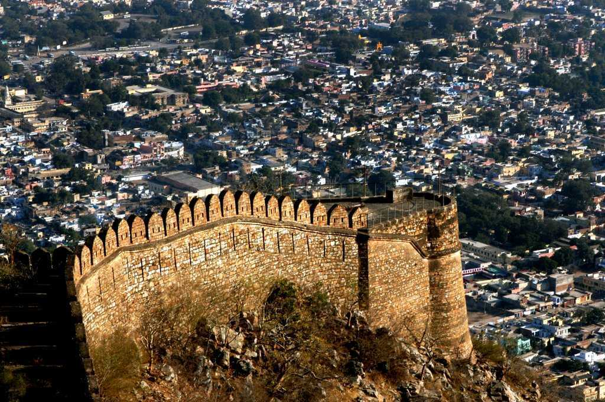
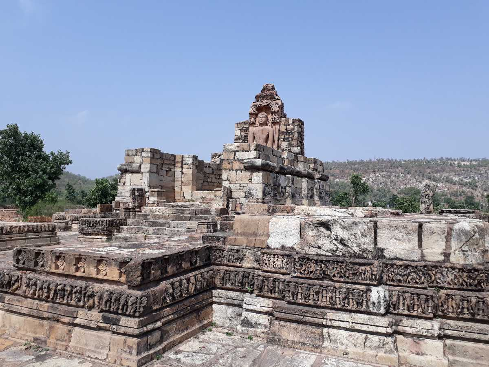
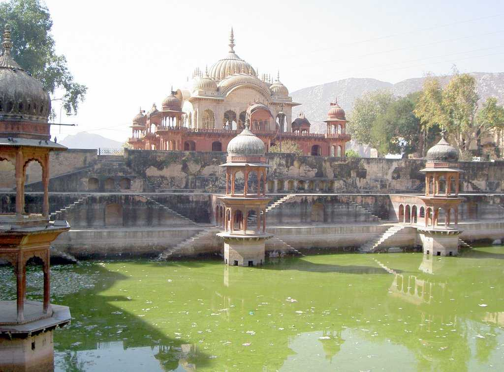
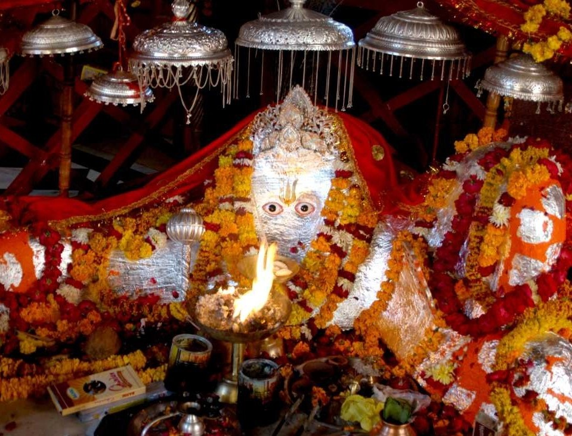
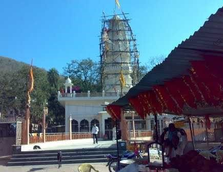
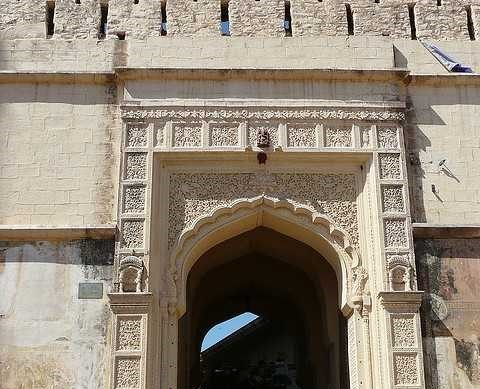
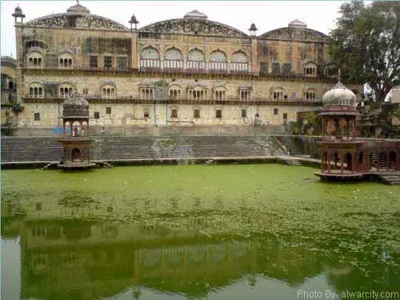

Bhangarh Fort
Famous for the historical ruins and the ghost stories, Bhangarh has been regarded as the most haunted place in the country. It is located on the way between Jaipur and Delhi.
Read more

Bala Quila Fort
Bala Quila Fort stands majestically about 1000 feet above the Alwar city. The fort has 15 large and 51 small towers and the entire structure is adorned with marble columns and lattice window balconies.
Read more
Sariska National Park
Nestled in the Aravali Hills over an area of about 800 sq. Km covering the grasslands, dry deciduous forests, cliffs and rocky landscape, lays the Sariska National Park.
Read more
Siliserh Lake Palace
An erstwhile royal palace and hunting lodge, Siliserh Lake palace has been converted into a heritage hotel owned by Rajasthan Tourism Development Corporation (RTDC).
Read more
Kesroli
The Hill Fort Kesroli is one of the rare heritage hotels in Alwar that has been in existence since the 14th century. Hill Fort-Kesroli is a great holiday choice for those looking for a relaxing weekend getaway.
Read more
Moti Dungri
Famous for its swanky palace, the Ganesh and Lakshmi Narayan temples, Moti dungri is a favourite spot of the tourist folk. Ganesh temple at the foot of the hill allures not only the devotees.
Read more

Neelkanth Temple
Neelkanth temple is located within the Tiger Reserve premises and though it is almost in ruins, locals still hold faith in this temple, and many other temples
Read more
Sariska Palace
Sariska Palace was the poaching lodge of the Maharaja of Alwar. The palace is much admired for its architectural grandeur and natural surroundings.
Read more

City Palace
City palace also known as Vinay Vilas Mahal, an architectural marvel and a lovely mix of Mughal and Rajasthani design, gives you a glimpse of the royal life style.
Read more
Vijay Mandir Palace
Situated at a distance of 10 kilometers from the center of the city of Alwar, Vijay Mandir Palace is said to have been built as a result of the whims of the eccentric King.
Read more
Moonsi Maharani Ki Chhatri
Chhatris are commonly used to depict the elements of pride and honor in the Rajput architecture of Rajasthan.It is an elegant monument, shaped like a flower .
Read more
Company Bagh
Company Bagh is one of the beautiful gardens of this sandy place which boasts of an outstanding formation, which is called Shimla house.
Read more

Pandupol
Pandupol is a Hanuman temple, located inside Sariska jungles. Legend has it, that the Pandavas spent their time in exile ('Agyatvaas') - secret time - here.
Read more

Naldeshwar Temple
This shrine is a little off the town and lies on the Sariska-Alwar highway. Cars and other means of transport will have to be left near the highway.
Read more

Jai Mata Mandir
This massive fortress also shows some exquisite doorways that were used as the entry points to this amazing citadel.This Hindu temple was dedicated to Jai Mata.
Read more

Government Museum
Situated in the vicinity of City Palace, the Government Museum in Alwar was established in 1940. Housing a brilliant collection of paintings, frescoes and artefacts, the museum boasts of rich ancient heritage of the royal families.
Read more
Karni Mata Mandir
Situated in the heart of the city, near Bala Qila and Sagar Palace, Karni Mata Mandir is revered Hindu site and a major tourist attraction in Alwar. Supposedly the fiercest incarnation of Goddess Kali, Karni Mata is the presiding deity of the temple.
Read more